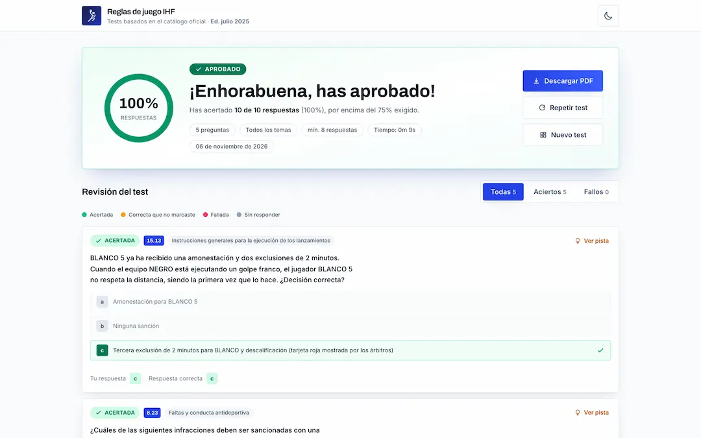

Prepara tu test de reglas de juego
432 preguntas con sus respuestas y las directrices en las que se basan, extraídas del catálogo oficial IHF (ed. julio 2025). Filtra por tema, elige la longitud del test y responde a las preguntas.
Se aprueba con ≥75% de respuestas correctas
